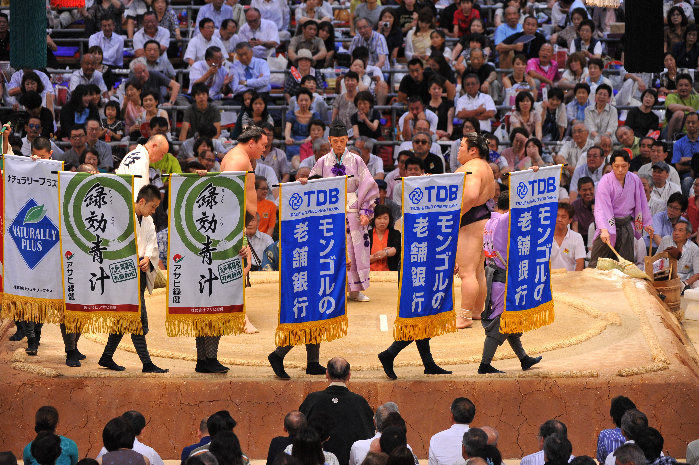
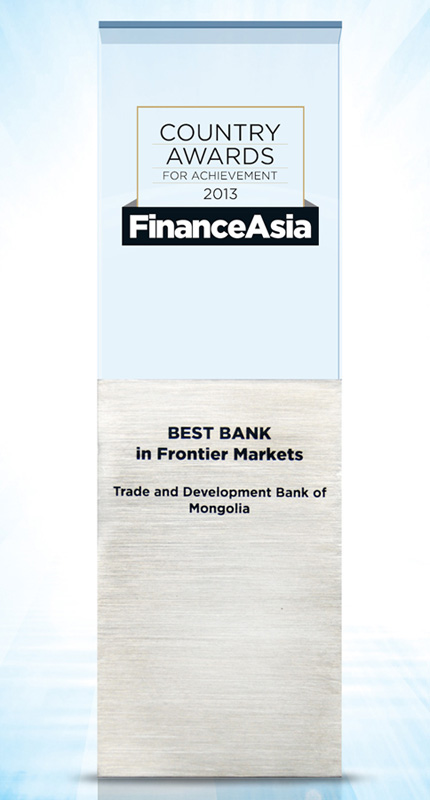
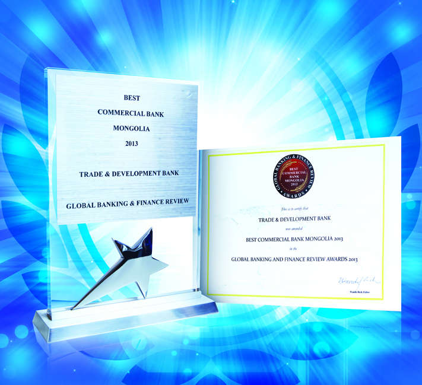
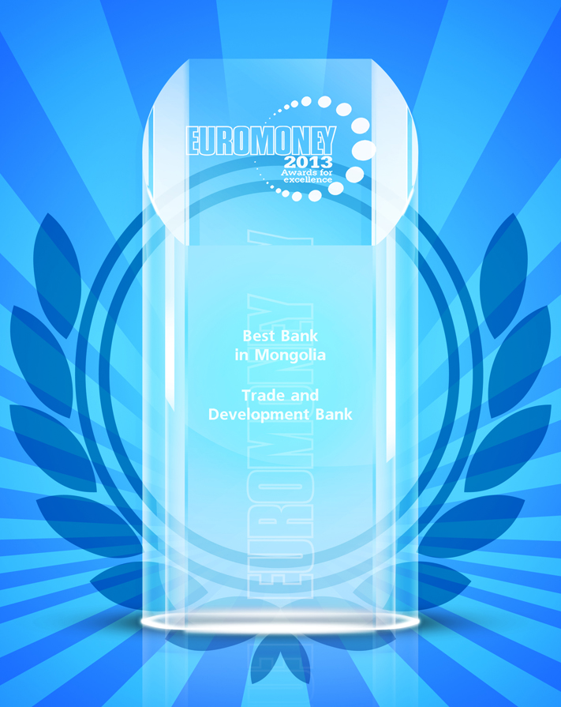
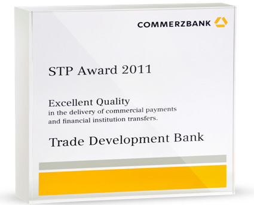
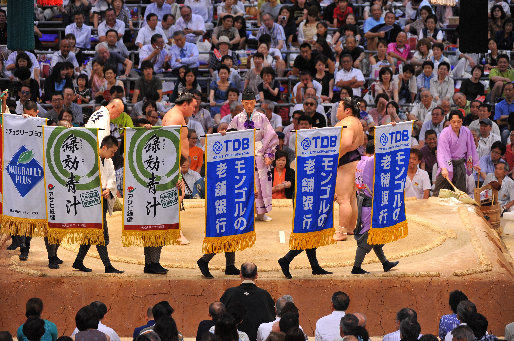
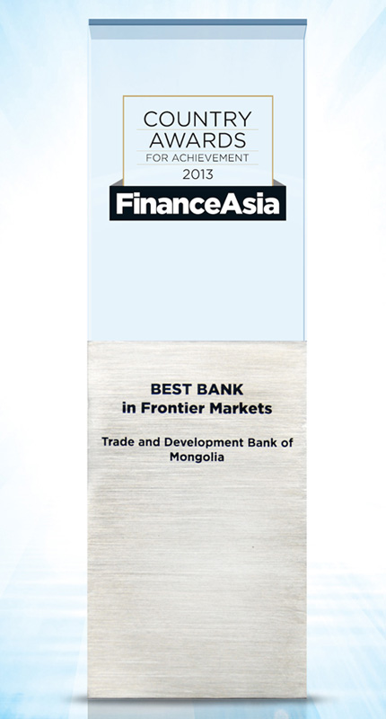
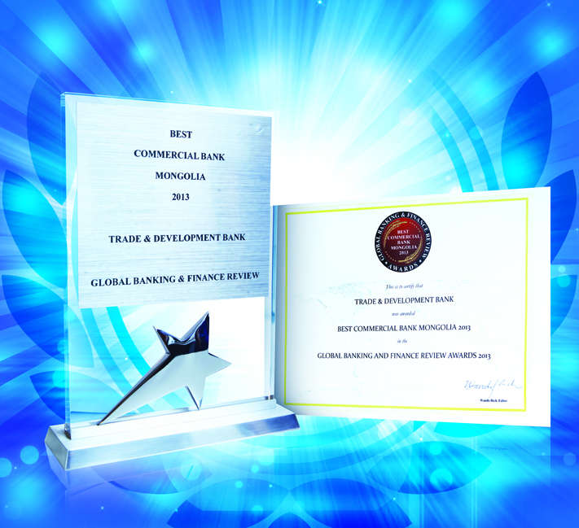
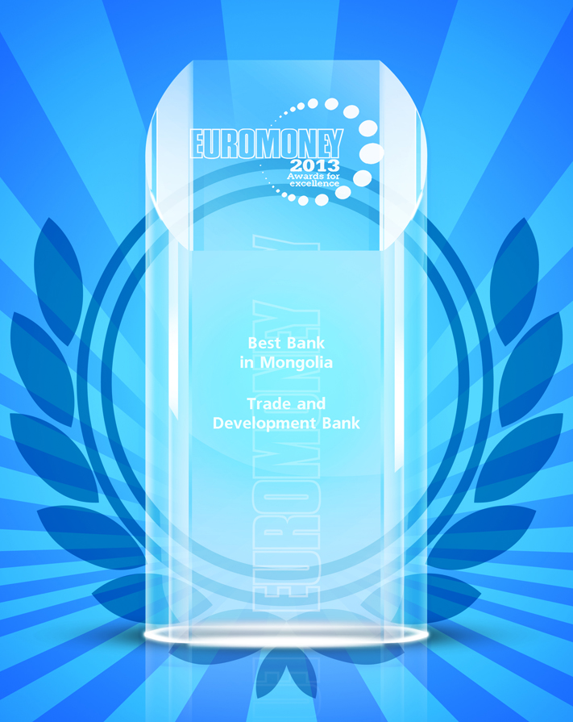
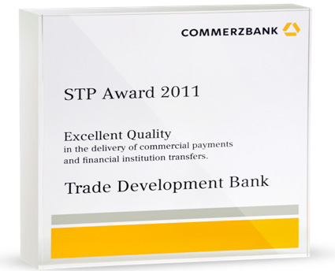

Trade Development Bank of Mongolia
 









Mongolian Best Corporate Bank:
- TDB serves approximately 400 major Mongolian corporations in almost all major sectors. The bank provides various corporate banking services including corporate lending, trade financing syndicated lending and deposit taking through highly qualified staffs.
- As of March 2014, TDB is the largest and most experienced bank in corporate banking market with 32.5% corporate lending and 51.9% trade financing market shares.
- At the end of June 2014, TDB’s total loan reached MNT 2927.8 billion and SME loan amount MNT 132.6 billion.
TDB in retail market:
- Internet banking system was renewed with advanced technologies and became the new brand “TDB online” in August 2013. Also, the improvement of “Most Money” has led to more close relationship with customers. At the end of June 2014, the number of “Most Money” customers increased up to 38443.
- First time in Mongolia, TDB introduced Union Pay card in October 2012, which includes CNY, MNT, and USD accounts at the same time.
- TDB is the only bank that allows its clients to accept transactions from all the cards of the world’s leading financial institutions, such as Visa, Master card, JCB and Union Pay.
- As of June 2014, TDB provides services through a network of 51 branches and settlement centers, 188 ATMs and 2102 POS terminals.
Globally acknowledged TDB:
- TDB successfully issued senior unsecured notes in 2007, 2010, 2012 and 2013 in international finance market for the first time from Mongolia. Therefore, the bank successfully issued the country’s first ever offshore CNH 700 million or USD 115 million bond, listed at Hong Kong and Singapore Stock Exchange on 14 January 2014.
- TDB has announced its first syndication on the international syndicated market in September 2013. About the facility, this is a USD 82 million co-financing facility with FMO; it comprises a USD 35 million A loan arranged by FMO and a USD 47 million B loan arranged jointly by ING and TDB Capital LLC.
- In June, 2013, TDB Capital and MG Leasing, a subsidiary company of Japanese Sumitomo Mitsui Banking Corporation established a Corporate Alliance Agreement to launch a new company under TDB Leasing.
- In October of 2012, TDB announced the official launch of Bloomberg TV Mongolia in partnership with Bloomberg International. The launch of Bloomberg TV Mongolia signifies the introduction of the first international broadcast news organization in Mongolia, one of the fastest-growing stock markets and investing environments in Asia today.
- Furthermore, one of the most important highlights was TDB signed an investment agreement with The Goldman Sachs Group, a leading global financial services firm. Goldman Sachs has acquired a 4.8 percent stake in TDB in January 2012. The investment assists TDB in growing its business to meet the expected increased needs of its clients as Mongolia’s economy continues a period of strong economic growth.
- In 2011, TDB Capital is regulated and licensed by the Financial Regulatory Commission of Mongolia to act as an underwriter, broker and other investment banking service provider that shall be done on behalf of the customer upon its order.
- The Bank has direct correspondent relationships with more than 150 foreign banks and financial institutions and manages its international transactions through 41 nostro accounts held with top 34 banks. TDB provides 50% alone of the Mongolian foreign transfer.
Achievements
-
2014
- “Best Bank of Mongolia 2014” from Finance Asia magazine,
- “Best Bank of Mongolia” by MNCCI,
- “Best Enterprise” by European Business Assembly,
- “Best Commercial Bank Mongolia” by “Global Banking & Finance review”, 2013
- “Best Commercial Bank Mongolia” by “Global Banking & Finance review”
- “Best trade finance bank in Mongolia” from “GTR” Magazine
- “Best Bank in Frontier Markets” award from “Finance Asia” magazine
- “Best Bank of Mongolia” award from “Euromoney” magazine 2012
- “Excellent Quality of Straight Through Processing Award” by Commerzbank AG
- “Best Corporate Bank Mongolia 2012” by “Global Banking & Finance Review”
- “Best Bank of Mongolia 2012” award from “FinanceAsia” magazine
- “Best trade finance bank in Mongolia” GTR Asia Leaders in Trade Awards 2012 2011
- “The Best Investment Envoy” award from FIFTA of Mongolia
- “The Best trade finance bank in Mongolia” from GTR magazine 2010
- “The Best Banking Award” from “ TOP-5 Bank” nomination 2010
Moody's rating on TDB
Moody’s assigned a foreign currency issuer rating of B1/P for TDB, in line with Moody’s country ceiling rating on Mongolia. TDB’s local currency issuer rating of B1/NP, affirm in March 2013, is two-notches higher than the Mongolian sovereign rating.
| Senior Unsecured EMTN (foreign currency) | B1/P |
| LT/ST Bank Deposits (foreign currency) | B2/NP |
| LT/ST Bank Deposits (domestic currency) | B1/NP |
| LT/ST Issuer Rating | B1/NP |
| Subordinated Obligation MNT | B2 |
| Outlook | Negative |